Mensageiro privado,
sem número de telefone.
O OnionTalk funciona sobre a rede Tor v3, sem servidor central. Não pede telefone nem e-mail, não guarda seus contatos na nuvem e esconde seu IP. Cada mensagem é cifrada no seu aparelho e entregue por relays que qualquer pessoa pode operar.
- Tor v3 (.onion)
- X25519 + ML-KEM-768
- ChaCha20-Poly1305
- SQLCipher AES-256
Outras formas de instalar e rodar um relay
Central de Vídeos Promocionais 1080p e Kit de 16 Telas Reais.
Assista aos vídeos oficiais da versão v1.5.0 (Promo Oficial PT/EN, Tour Completo de Funções, formato Reels/Shorts 9:16 e Filme Manifesto) e inspecione as 16 capturas reais do aplicativo em operação.
Vídeo Promo Oficial v1.5.0: Mensagens com Senha, Cofre & Malha Tor (1080p)
Locução feminina natural de estúdio apresentando a barra flutuante estilo Telegram, Grupos Criptografados, figurinhas WebP, mensagens com senha (auto-tranca em 15s), nível de Amigo e download direto do Server Relay APK.
-
01.
Criptografia Pós-Quântica (ML-KEM-768) & Grupos PQC Soberanos: Handshake híbrido NIST FIPS 203 (
__ENC_PQC_KYBER768_X25519_V3__) e grupos E2EE (__GROUP_PQC_MSG_V1__) com governança P2P anti-spam (3+ contatos e 5+ dias ouFounderPassEd25519 offline). -
02.
Estúdio de Desfoque em RAM & Cofre TEE + AES-256-GCM: Blur/Pixelate de fotos em RAM antes do envio, sanitização 100% de EXIF/GPS (
Canvas Raw + LSB Jitter), mídia cifrada em repouso e biometriaAndroidKeyStoreanti-coação. -
03.
Malha Global de 20 Nós Tor v3 (v=31) & GossipSub v1.2: Roteamento S/Kademlia XOR com afinidade cega em RAM, deduplicação
IHAVE/IDONTWANT(-70% de banda) e Dual Warm Socket Pool (~1.13s E2E).
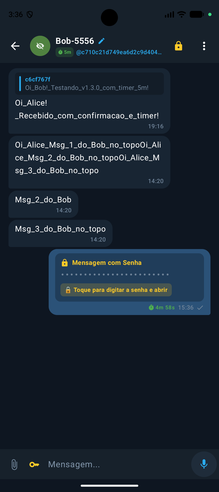
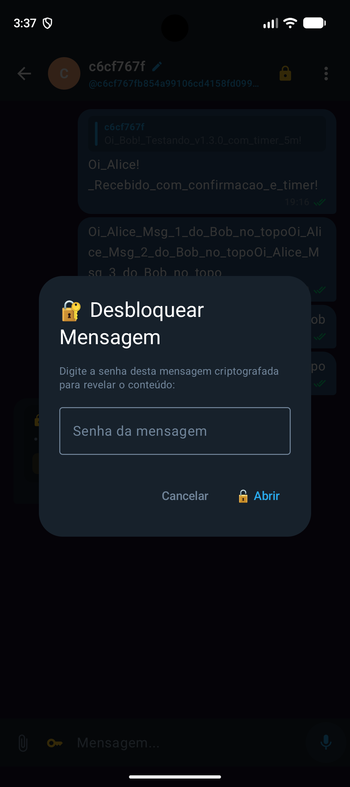
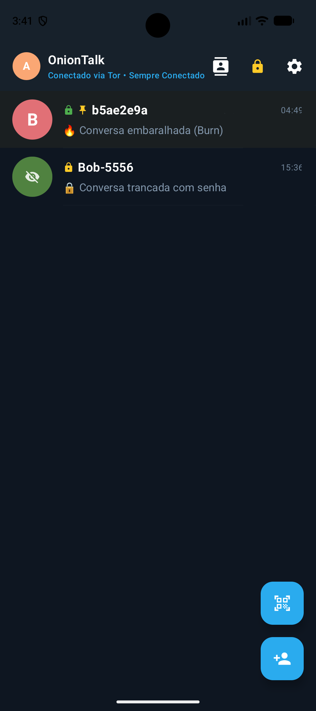
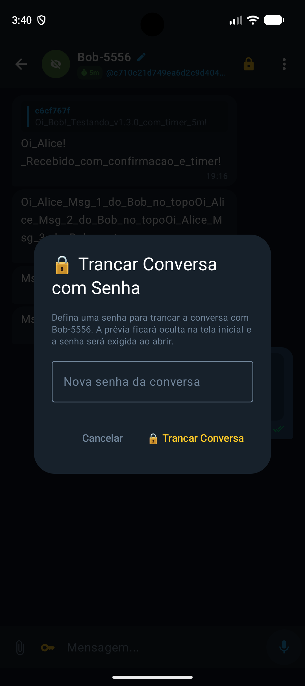
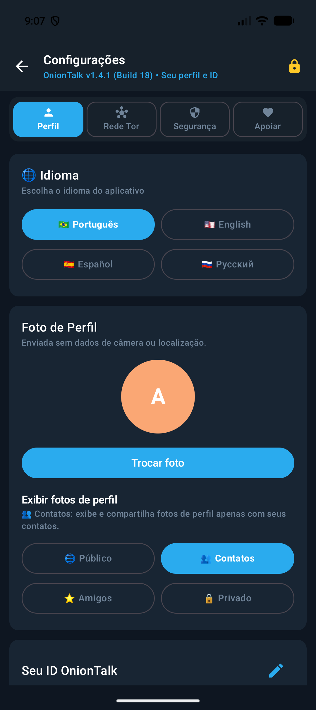
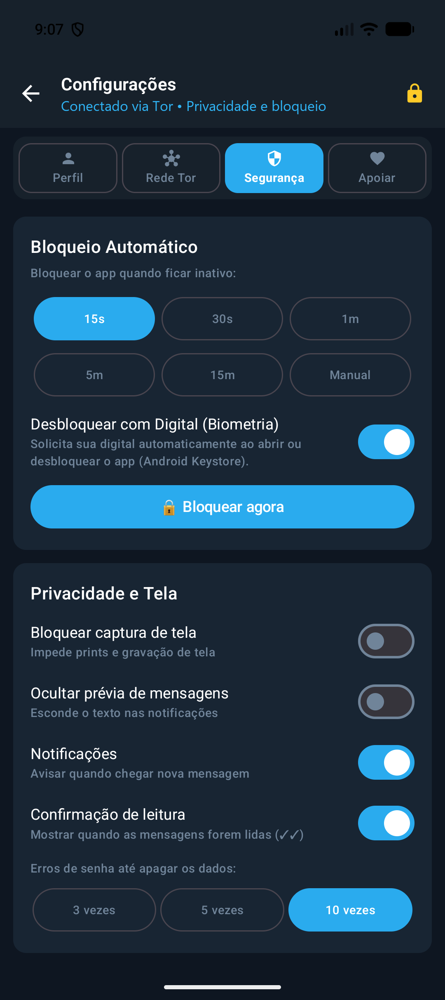
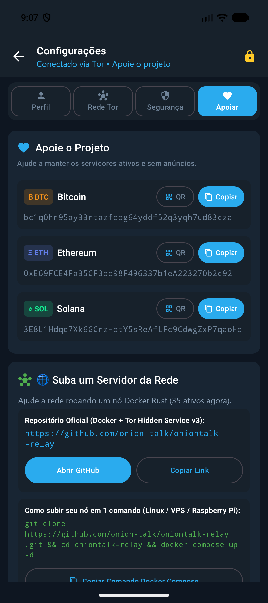
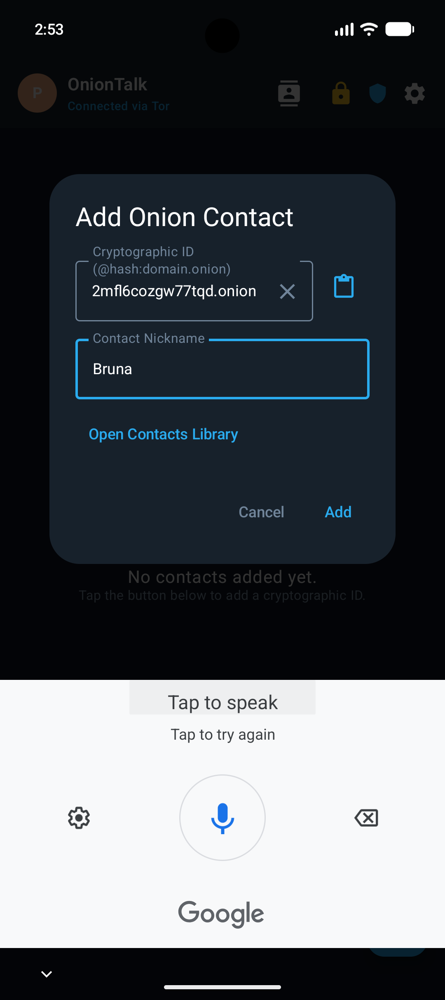
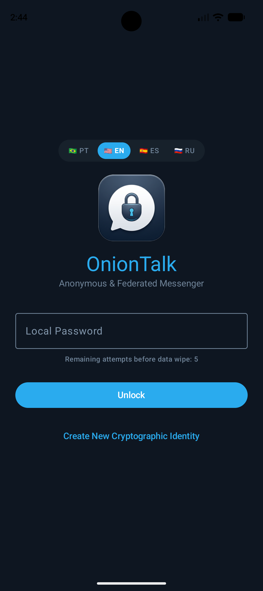
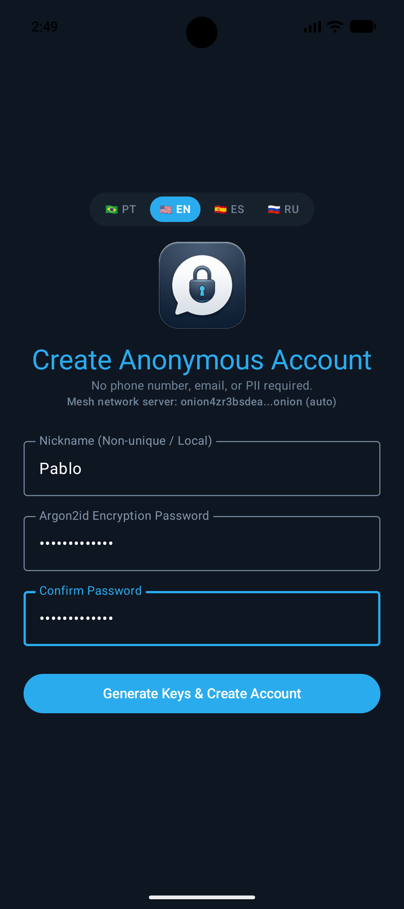
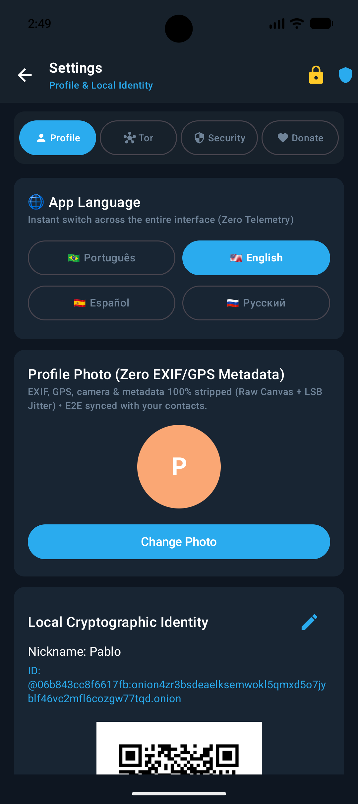
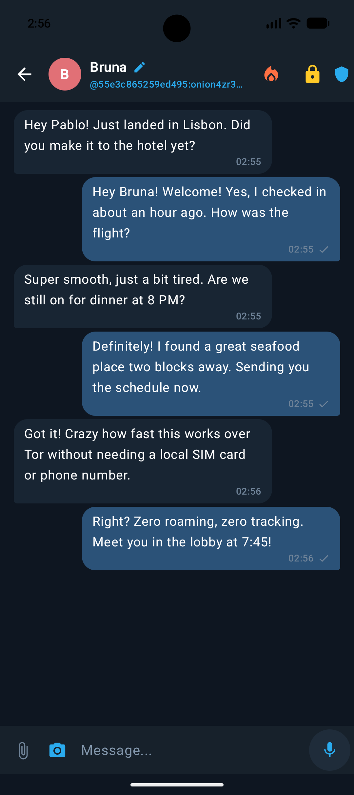
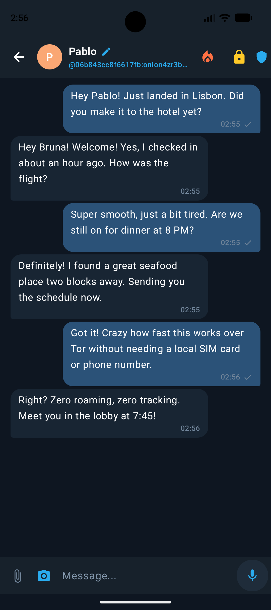
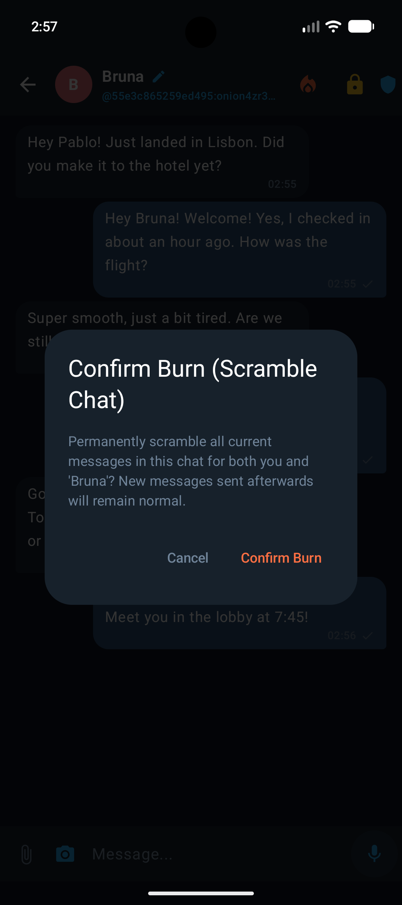
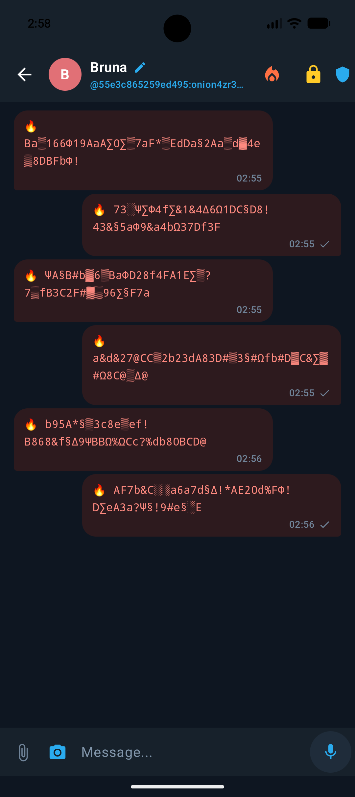
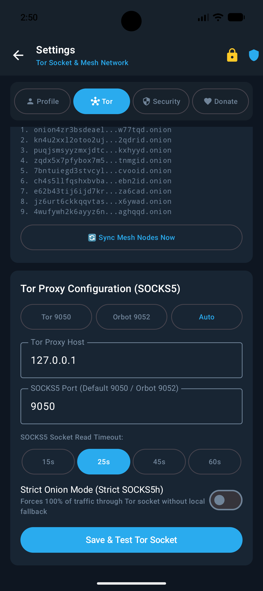
Construído para resistir a auditoria forense, interceptação de rede e coação física.
Cada componente substitui uma dependência centralizada de Big Tech por provas matemáticas verificáveis.
Daemon Tor v3 Nativo Embarcado (Sem Orbot / Sem VPN Global)
O binário nativo libtor.so roda estritamente dentro do sandbox do aplicativo. O OnionKeepAliveService mantém o circuito SOCKS5h vivo em segundo plano com boundedGateways (eliminando Head-of-Line Blocking) sem sequestrar a VPN do sistema Android.
Identidade Sem Chip SIM, Sem Telefone e Sem E-mail
Sua conta é um par de chaves criptográficas gerado offline no seu aparelho. Nenhum SMS, e-mail, IMEI ou número de telefone jamais existe no protocolo.
Cofre SQLCipher AES-256, Senha de Coação & Lockdown
Banco cifrado com PBKDF2-HMAC-SHA256. A Senha de Coação destrói o cofre em milissegundos, e o botão de cadeado manual desarma a biometria contra coação física.
Envelopes Wire V2 com Forward Secrecy & ACK Preimage Lock
Cada mensagem gera uma chave efêmera X25519 combinada via HKDF-SHA256 e selada com ChaCha20-Poly1305 AEAD + assinatura Ed25519. O relay só descarta o envelope da RAM quando o destinatário prova conhecer a pré-imagem SHA-256(ack_token) == ack_lock.
Infraestrutura Global Descentralizada (.onion) & Relay Android
O OnionTalk sincroniza automaticamente entre 20 relays Tor v3 distribuídos em 8 países (Brasil, EUA, França, Alemanha, Rússia, Singapura, Japão e China) com Zero-Touch Auto-Join 100% anônimo (Zero-Leak de IP, aparelho ou localização). Suba um novo nó em 10 segundos no Docker ou diretamente dentro do seu celular Android como aplicativo secundário.
1. Subir Nó Relay em Servidor / Container
A imagem eriktonon/oniontalk:latest empacota Tor 0.4.9.14 + Gunicorn Zero-Trust Relay + Auto-Join paralelo. Entra na malha automaticamente via Tor v3 sem expor IP, latitude/longitude ou abrir portas no firewall.
2. Subir Nó Relay Dentro do Android (App Secundário)
Transforme qualquer celular Android (4G/5G/Wi-Fi, mesmo atrás de CGNAT) em um servidor Tor v3 Hidden Service soberano (127.0.0.1:9055 → :8088). Instala lado a lado com o mensageiro principal sem conflito de portas, permite escolher apenas o Nome do Nó e faz Auto-Join 100% anônimo nos 20 seeds (zero coleta de IP, modelo do celular ou latitude/longitude).
3. Rodar OnionTalk Web Client + Nó Relay Tor v3 (Windows / Linux / macOS)
Execute o cliente web completo do OnionTalk + nó Relay Tor v3 embutido localmente em http://127.0.0.1:8420 via Docker. Compilado nativamente em Rust (binário strip=symbols + UPX --lzma, PR_SET_DUMPABLE=0, cofre Argon2id 64 MiB + AES-256-GCM, áudios e imagens cifrados em repouso OTATT1, Grupos Pós-Quânticos ML-KEM-768, Estúdio de Desfoque em RAM e transporte local selado com ChaCha20).
| Nó / Região | Endereço Tor v3 Hidden Service (.onion) | Protocolo & Papel | Status | Ação |
|---|---|---|---|---|
| BR · São Paulo #1 (Primary Seed #1) | onion4zr3bsdeaelksemwokl5qmxd5o7jyblf46vc2mfl6cozgw77tqd.onion | PEX v31 · Ed25519 Master Seed | ONLINE · 99.98% | |
| BR · São Paulo #2 (Secondary Seed #2) | kn4u2xxl2otoo2ujv3mhehwfwbw7mtppaf56fu3nxogvv7eekf2qdrid.onion | PEX v31 · South America Core Seed | ONLINE · SYNCED | |
| US · US-East Mesh Node #3 (Virginia #1) | e3a7jfpzcsj6e7o7lzrwos2qz53wesp62lgjmsa3pld6xwnqvromrvqd.onion | PEX v31 · North America Relay | ONLINE · SYNCED | |
| BR · São Paulo #3 (South America Backbone #4) | zqdx5x7pfybox7m5rz3fe5kiouxhipvh3ekuteq2urrrvwcxjttnmgid.onion | PEX v31 · South America Backbone | ONLINE · SYNCED | |
| US · US-East Mesh Node #5 (Ashburn #2) | xememocnagky3qlkkx7n6tgkmjrzhmfzoahbke3gvtea6nu4nnc27sad.onion | PEX v31 · North America Relay | ONLINE · SYNCED | |
| FR · EU-West Node #6 (Paris #1) | 7bntuiegd3stvcylvx7rhnhq7ncasxiokunbf5onvvm34dg5gccvooid.onion | PEX v31 · Western Europe Relay | ONLINE · SYNCED | |
| US · US-East Mesh Node #7 (South Carolina) | jz6urt6ckkqqvtasm6bll2mryhksjcawcl4tbguif5nqvxgsfsx6ywad.onion | PEX v31 · US-East Backbone Relay | ONLINE · SYNCED | |
| US · US-Central Mesh Node #8 (Ohio #1) | 4wufywh2k6ayyz6nmh2w25hj5vjsqgkve24o2tthvc7rhyvxnhaghqqd.onion | PEX v31 · US-Central Relay | ONLINE · SYNCED | |
| RU · EE-East Mesh Node #9 (Moscow #1) | nwsoa6ddtbbqbwcceanhhj3j23d5a47zbpbs6zspz5zoeytzqpzvkqqd.onion | PEX v31 · Eurasia Relay | ONLINE · SYNCED | |
| US · US-East Mesh Node #10 (Container Hub #1) | bk7iegv3v232ycjyf5ylwsdx42iozvy2dhhff5zn3ciwa3g2lkifdlad.onion | PEX v31 · Edge Container Relay | ONLINE · SYNCED | |
| FR · EU-West Node #11 (Paris #2) | hdjp7uaj4qemlmwtev7xmj2w3uexnv6ctplfgvbmpqxenbfgwjjwtrid.onion | PEX v31 · Western Europe Relay | ONLINE · SYNCED | |
| FR · EU-West Node #12 (Paris #3) | gcvfh67zltoyvithw6luetsrcec6cw42upzrsprxfmx27cvh7vidw4yd.onion | PEX v31 · Western Europe Relay | ONLINE · SYNCED | |
| US · US-Central Mesh Node #13 (Iowa) | wfi3nwuzk2tgrsf2scdy4nb6x6rtiocit4n26477zdlvdvshkgip3ayd.onion | PEX v31 · US-Central Relay | ONLINE · SYNCED | |
| JP · AP-Northeast Mesh Node #14 (Osaka) | 5s6w6556f2eov2p6wlsuavaxh7si2kaswjwi5reojnovbzemducjzjqd.onion | PEX v31 · Asia-Pacific East Relay | ONLINE · SYNCED | |
| SG · AP-Southeast Mesh Node #15 (Singapore) | o5yf3eukrwpt2g6jfo4q2y23xtuhoso2qknmnn6ac5eng5t4yt36roqd.onion | PEX v31 · Southeast Asia Hub | ONLINE · SYNCED | |
| DE · EU-Central Mesh Node #16 (Nuremberg) | o5zqqfl5znzexdojfnxgub5jnjelxdahbyxasjp57sx6fbxtjeqovpad.onion | PEX v31 · Central Europe Relay | ONLINE · SYNCED | |
| CN · AP-East Mesh Node #17 (Hangzhou) | 2amizuhb3p5x2lk3sra7f7thm5tgs7qtnysgowqpmexcqi4cuwyv7vad.onion | PEX v31 · East Asia / GFW Bypass Relay | ONLINE · SYNCED | |
| US · US-East Mesh Node #18 (Container Hub #2) | fllhsqmq2qj4stn22bvdtdigthj5bftq6bq6eb62ynk4kva4kfkbjtid.onion | PEX v31 · Edge Container Relay | ONLINE · SYNCED | |
| US · US-Central Mesh Node #19 (Ohio #2) | rx46t5jwyoi7pqajaazk7xndqy6ep2n3x2u6bn7t3r34mg6eiehpdlad.onion | PEX v31 · US-Central Relay | ONLINE · SYNCED | |
| RU · EE-East Mesh Node #20 (Moscow #2) | q75gf2rwco7v33kuhmilafbtsvoxrygqmef7lq6allnk27zxruwzeqqd.onion | PEX v31 · Eurasia Relay #2 | ONLINE · SYNCED |
OnionTalk vs. WhatsApp, Telegram e Signal
Por que proteger apenas o texto da mensagem é insuficiente quando o seu número de telefone, IP e grafo social ficam expostos.
| Critério de Privacidade & Soberania | OnionTalk | Telegram | Signal | |
|---|---|---|---|---|
| Exige Número de Telefone (Chip SIM / KYC)? | Zero Telefone / Zero E-mail | Obrigatório | Obrigatório | Obrigatório |
| Oculta seu Endereço IP por padrão (Roteamento Onion)? | Tor v3 Nativo Embutido | Expõe IP à Meta | Expõe IP ao Servidor | Apenas Proxy Manual |
| Depende do Google Firebase (FCM) para receber mensagens? | 100% Independente (P2P Tor) | Depende de Google Play/FCM | Usa Push Centralizado | Usa FCM por padrão |
| Criptografia Ponta-a-Ponta (E2EE) em 100% das conversas? | Sempre Ativa (PQC ML-KEM-768 + X25519 + ChaCha20) | Sim (Metadados abertos) | Desativada por padrão (Cloud) | Sempre Ativa |
| Queima Bilateral + Senha de Coação + Trava Anti-Biometria? | Nativo (Shredding SQLCipher) | Não possui | Exclusão sem coação | Não possui |
1. Coleta Zero de Dados Pessoais (Zero PII)
O OnionTalk: Private Tor Chat (org.oniontalk.messenger) opera sob o princípio estrito de Zero-Knowledge (Conhecimento Zero). O aplicativo não solicita, não coleta, não armazena, não vende e não compartilha nenhum dado pessoal ou sensível do usuário:
- Sem cadastro tradicional: Nenhum número de telefone, chip SIM, endereço de e-mail, nome civil ou documento é solicitado.
- Sem leitura da agenda do telefone: Os contatos do sistema Android nunca são lidos ou sincronizados.
- Sem anúncios, rastreadores ou push em nuvem: Zero SDKs de publicidade, zero Google/Firebase Analytics e zero dependência do Google Cloud Messaging (FCM).
- Sem registro de IP ou localização: Toda a comunicação trafega exclusivamente por Serviços Ocultos Tor v3 (
.onion).
2. Criptografia e Armazenamento Local
Todos os dados gerados permanecem exclusivamente no dispositivo do próprio usuário:
- Em repouso (No aparelho): Mensagens, chaves privadas (Ed25519 / X25519), contatos e preferências de idioma (
.oniontalk_lang) são guardados localmente no banco criptografado SQLCipher (AES-256) derivado via PBKDF2-HMAC-SHA256 (100.000 iterações). - Em trânsito (Criptografia Pós-Quântica Híbrida na malha Tor v3): Envelopes selados ponta-a-ponta com ML-KEM-768 (Kyber-768 NIST FIPS 203) + Dual X25519 ECDH Efêmero + HKDF-SHA256 + ChaCha20-Poly1305 AEAD + Assinatura Ed25519 (
__ENC_PQC_KYBER768_X25519_V3__) e Grupos PQC (__GROUP_PQC_MSG_V1__), além de mensagens/conversas trancadas por senha individual (__LOCKED_MSG_V1__). Os nós de retransmissão jamais têm acesso ao conteúdo das mensagens, chaves de grupo, recibos de leitura ou timers.
3. Permissões e Serviços em Primeiro Plano (Foreground Service Disclosure)
O OnionTalk solicita apenas permissões estritamente necessárias para ações iniciadas pelo usuário e para manter o recebimento de mensagens P2P:
- Serviços em Primeiro Plano (
FOREGROUND_SERVICE,FOREGROUND_SERVICE_REMOTE_MESSAGINGeFOREGROUND_SERVICE_SPECIAL_USE): Utilizados peloOnionKeepAliveService("Modo Sempre Conectado") para manter o daemon Tor v3 (libtor.soem127.0.0.1:9050) ativo em segundo plano e transferir/receber mensagens criptografadas em tempo real sem depender do Google Firebase (FCM) e sem usarVpnServiceglobal. Exibe notificação visível com controles imediatos para "Novo Circuito" e "Pausar 2º Plano". - Câmera (
android.permission.CAMERA): Usada exclusivamente no aparelho quando o usuário escaneia um QR Code de contato ou tira uma foto instantânea pelo menu de anexos, com destruição de 100% dos metadados EXIF/GPS (Canvas Raw + LSB Jitter) antes da cifragem. - Microfone (
android.permission.RECORD_AUDIO): Usado apenas enquanto o usuário grava uma nota de voz criptografada ponta-a-ponta. - Biometria Opcional (
android.permission.USE_BIOMETRIC): Desativada por padrão. Quando ativada pelo usuário em Configurações → Segurança, utiliza o chip seguro localAndroidKeyStore(BiometricPrompt.CryptoObject) sem coletar ou transmitir dados biométricos, sendo desarmada automaticamente quando o usuário aciona o cadeado manual contra coação física. - Bloqueio de Captura de Tela Seletivo (
FLAG_SECURE): Ativo 100% do tempo nas telas de Conversas e Agenda de Contatos para impedir prints/gravações não autorizadas, permanecendo desativado na tela de Configurações / QR Code para permitir o compartilhamento da sua chave pública.
4. Retenção, Mensagens Efêmeras e Exclusão Instantânea
O usuário possui controle total e irreversível sobre a retenção e destruição dos seus dados:
- RAM Volátil nos Relays: Envelopes em trânsito ficam retidos apenas em memória RAM volátil até a prova criptográfica de entrega (
ACK) ou expiração em 24h, sendo imediatamente expurgados. - Mensagens com Timer e Queima Bilateral (Burn): Pelo menu da conversa, o usuário pode ativar autodestruição por mensagem (30s, 1m, 5m, 1h ou 24h) ou acionar o Burn Bilateral para sobrescrever o histórico nos dois dispositivos.
- Apagar Conversa vs. Biblioteca de Contatos: Apagar uma conversa limpa as mensagens mantendo o contato salvo localmente na Biblioteca de Contatos; deslizar o contato para a esquerda na Biblioteca remove o contato permanentemente.
- Exclusão Total da Conta: Em Configurações → Segurança → Excluir Conta (ou via Senha de Coação), todo o banco SQLCipher e as chaves locais sofrem shredding físico irreversível.
5. Público-Alvo e Segurança Infantil
O OnionTalk é destinado ao público adulto (18 anos ou mais) que busca comunicação privada e soberania criptográfica. O aplicativo não é direcionado a menores de idade e não coleta informações de crianças.
6. Canal de Contato, Doações e Auditoria Open Source
Ao baixar o OnionTalk ou em caso de doação por algum outro meio, entre em contato diretamente pelo próprio app com um de nossos administradores:
- Contato do Administrador no App (Suporte & Doação por Outros Meios):
@bbac48f99ed4536ce9134df16cc49dbed2d9109ed351710d181d86c28f34efd9:onion4zr3bsdeaelksemwokl5qmxd5o7jyblf46vc2mfl6cozgw77tqd.onion - Instagram Oficial: instagram.com/oniontalk.app (@oniontalk.app)
- Organização Oficial no GitHub: github.com/onion-talk
- Especificação do Protocolo & Issues: github.com/onion-talk/oniontalk-protocol
- Espelho Oficial na Rede Tor v3 (.onion):
http://oniontg2bwgpz25axonrxmxw5yfsf4pgj5d5wzsqe3sirinhfpzasoad.onion - E-mail de Segurança & Privacidade: security@oniontalk.org
7. Disclaimers Legais, Isenção de Responsabilidade & Termos de Uso Soberano (v1.5.0)
Ao instalar, executar ou operar qualquer componente do ecossistema OnionTalk v1.5.4 (Build 48) (aplicativo Android org.oniontalk.messenger, nó Android org.oniontalk.relaynode, container Desktop/Web onion-talk-web ou servidor oniontalk-relay), o usuário declara ciência e concordância integral com os seguintes avisos legais:
- Provisão “No Estado em que se Encontra” (AS IS · Licença MIT): O software é distribuído gratuitamente como projeto experimental de pesquisa criptográfica aplicada, sem garantias expressas ou implícitas de comercialização, adequação a um propósito específico ou disponibilidade ininterrupta dos circuitos da rede Tor v3.
- Impossibilidade Técnica de Recuperação de Senha, Custódia ou Interceptação (Zero-Knowledge Disclaimer): Por operar sem servidores centrais de contas, sem cadastro de telefone/e-mail e sem chaves mestras (backdoors), os desenvolvedores e operadores de nós relay não possuem meios técnicos ou matemáticos para recuperar senhas perdidas, destravar mensagens/conversas protegidas por senha (
__LOCKED_MSG_V1__), reverter uma Queima Bilateral (Burn) ou Senha de Coação (Duress Wipe), identificar endereços IP ou descriptografar envelopes em trânsito. A perda da senha local resulta na perda definitiva e irreversível dos dados armazenados no dispositivo. - Neutralidade de Roteamento dos Operadores de Nós Relay & Uso Lícito: Os nós da malha federada atuam estritamente como roteadores cegos de trânsito em memória RAM volátil (
ram-volatile-ephemeral-ttl24h) sobre Serviços Ocultos Tor v3, sem conhecimento de remetente, destinatário ou conteúdo. O OnionTalk é concebido exclusivamente para a proteção legítima da privacidade, direitos humanos, sigilo profissional e segurança da informação; o usuário é o único e exclusivo responsável pelo uso ético e lícito da ferramenta em sua jurisdição. - Governança Local de Grupos PQC & Natureza Voluntária de Doações: O desbloqueio de criação de Grupos Pós-Quânticos (
3+ contatose5+ diasde conta ouFounderPassassinado viaEd25519) é verificado 100% offline no próprio aparelho como mecanismo anti-spam/anti-Sybil, sem cobrança financeira. Doações em criptoativos (BTC,ETH,SOL) são contribuições voluntárias ao projeto open-source e não configuram contratação de serviço ou SLA.